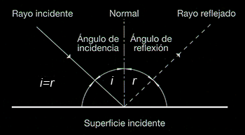
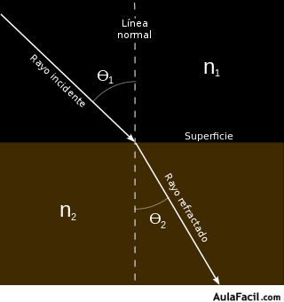
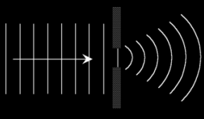

¡Bienvenidos Estudiantes!
Si quieren ver más temas relacionados a la física pueden ver el temario accediendo nuevamente al apartado superior y seleccionando el tema de su elección.
Fenómenos ondulatorios
Reflexión de las ondas
Se denomina reflexión de una onda al cambio de dirección que experimenta ésta cuando choca contra una superficie lisa y pulimentada sin cambiar de medio de propagación.
Si la reflexión se produce sobre una superficie rugosa, la onda se refleja en todas direcciones y se llama difusión.
En la reflexión hay tres elementos:
- Rayo incidente
- Línea perpendicular a la superficie.
- Rayo reflejado.
Se llama ángulo de incidencia al que forma la normal con el rayo incidente, y ángulo de reflexión al formado por la normal y el rayo reflejado.

Las leyes de la reflexión dicen que el ángulo de incidencia es igual al ángulo de reflexión y que el rayo incidente, reflejado y la normal están en el mismo plano.
Refracción de las ondas
Refracción de una onda es el cambio de dirección y de velocidad que experimenta ésta cuando pasa de un medio a otro medio en el que puede propagarse. Cada medio se caracteriza por su índice de refracción.
Intervienen tres elementos:
- Rayo incidente
- Línea normal o perpendicular a la superficie.
- Rayo refractado.
El ángulo de incidencia es el que forma la normal con el rayo incidente, y ángulo de refracción al formado por la normal y el rayo refractado.

Difracción de las ondas
3. Difracción de las ondas
Cuando una onda llega a un obstáculo (abertura o punto material) de dimensiones similares a su longitud de onda, ésta se convierte en un nuevo foco emisor de la onda.
Cuanto más parecida es la longitud de onda al obstáculo, mayor es el fenómeno de difracción.

interferencia de las ondas
Es la superposición o suma de dos o más ondas. Depende fundamentalmente de las longitudes de onda, amplitudes y de la distancia relativa entre las mismas. Se distinguen dos tipos de interferencias:
- Constructiva: se produce cuando las ondas chocan o se superponen en fases, obteniendo una onda resultante de mayor amplitud que las ondas iniciales.
- Destructiva: es la superposición de ondas en antifase, obteniendo una onda resultante de menor amplitud que las ondas iniciales.